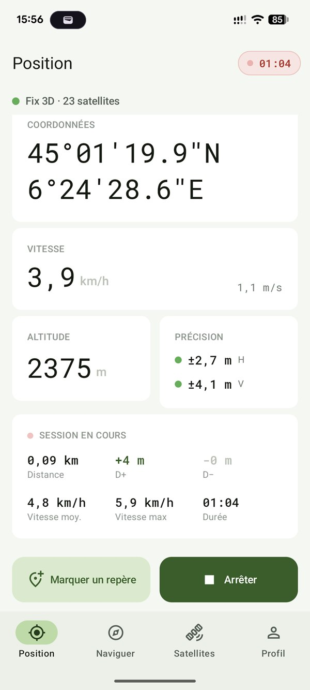
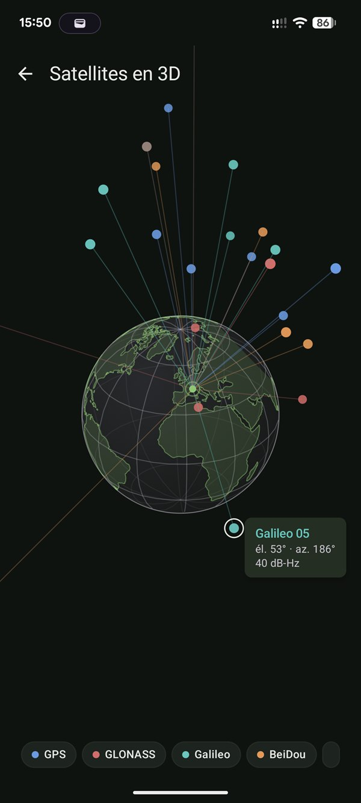
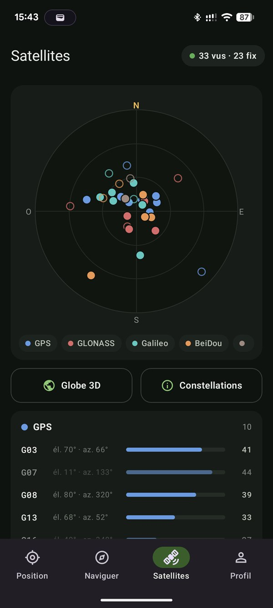
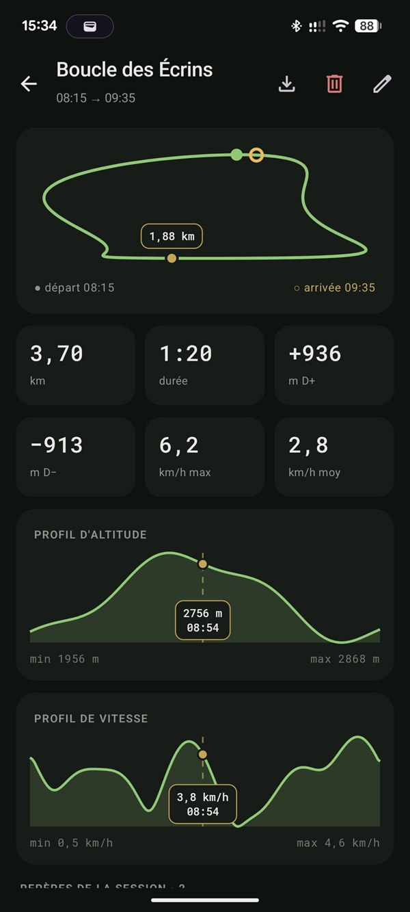
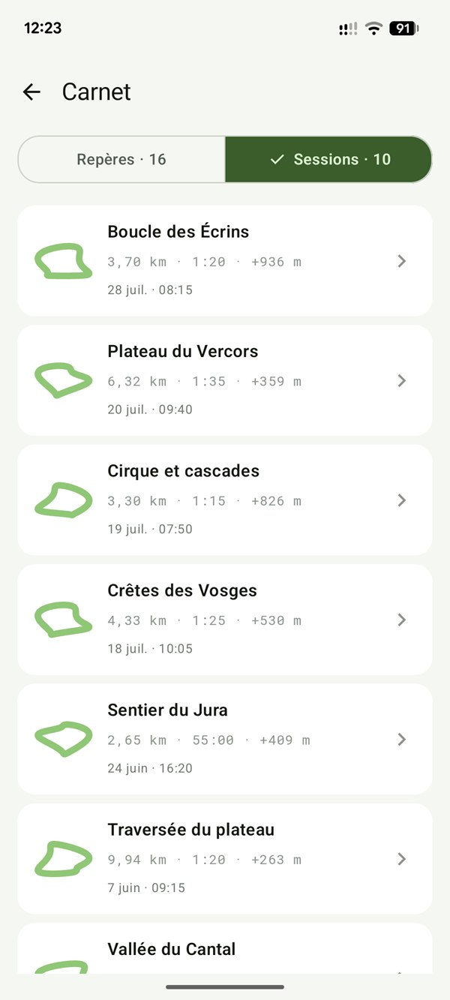
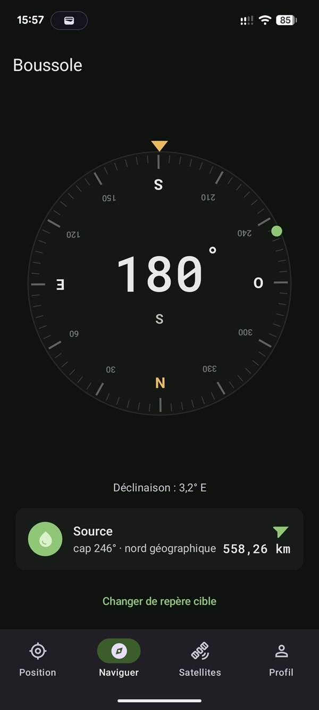
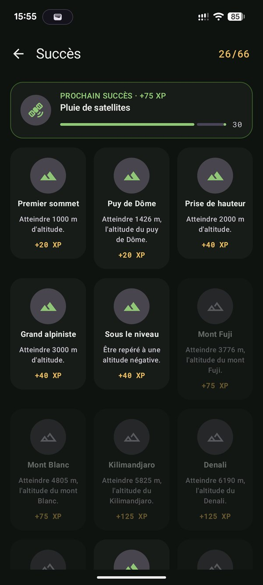

- constellations suivies
- 6
- succès à débloquer
- 66
- compte, pub ou traqueur
- 0
- hors ligne
- 100 %

01 · Position
Évaluez d’un coup d’œil la fiabilité de votre position.
Coordonnées décimales ou DMS, altitude corrigée du géoïde EGM96, vitesse en km/h et m/s. La précision horizontale et verticale s’affiche avec un code couleur lisible en plein soleil.
- < 5 mprécis
- 5–15 mcorrect
- > 15 mdégradé


02 · Satellites
Le ciel, en trois vues.
GPS, GLONASS, Galileo, BeiDou, QZSS, IRNSS : découvrez quels satellites vous localisent, d’où proviennent leurs signaux et lesquels servent au fix.
- 01Globe 3DLa géométrie réelle de la constellation au-dessus de vous.
- 02Diagramme du cielAzimut et élévation de chaque satellite.
- 03Liste détailléeConstellation, force du signal, satellites utilisés.


03 · Traces & carnet
Rangez le téléphone, il garde la trace.
L’enregistrement continue écran éteint : distance, durée, vitesses moyenne et max, dénivelés positif et négatif. Chaque sortie rejoint votre carnet de route avec profils d’altitude et de vitesse, repères et export GPX.

04 · Boussole
Le cap, et le chemin vers vos repères.
Nord magnétique ou géographique, avec une déclinaison calculée localement. Choisissez un repère : flèche, distance et azimut vous y guident.

05 · Succès
66 succès pour pimenter vos sorties.
Du premier sommet au Kilimandjaro, du 45e parallèle au repère posé avant 6 h du matin. Chaque succès rapporte de l’XP, et vos records personnels vous suivent d’une sortie à l’autre.
FAQ
Questions fréquentes
CairnGPS fonctionne-t-il sans connexion internet ?
Oui. Le GPS de votre téléphone capte directement les satellites, sans réseau mobile ni Wi-Fi. CairnGPS n’a besoin d’aucune connexion pour la position, les satellites ou l’enregistrement des traces : tout fonctionne hors ligne, en montagne comme en mode avion.
Comment voir les satellites GPS captés par mon téléphone ?
L’onglet Satellites affiche chaque satellite sur un diagramme du ciel selon son azimut et son élévation, détaille la force de son signal dans une liste et replace la constellation au-dessus de vous sur un globe 3D. Vous voyez combien de satellites sont visibles et combien servent au calcul de votre position.
Quelles constellations satellites sont prises en charge ?
GPS (États-Unis), GLONASS (Russie), Galileo (Europe), BeiDou (Chine), QZSS (Japon) et IRNSS/NavIC (Inde), selon ce que reçoit la puce GNSS de votre téléphone.
Pourquoi l’altitude affichée est-elle fiable ?
Le GPS mesure une hauteur au-dessus d’un ellipsoïde, qui peut s’écarter de plusieurs dizaines de mètres de l’altitude des cartes. CairnGPS la corrige avec le modèle de géoïde EGM96 pour afficher une altitude au-dessus du niveau de la mer.
L’enregistrement d’une trace continue-t-il écran éteint ?
Oui. Une fois la session lancée, vous pouvez ranger le téléphone : l’enregistrement continue en arrière-plan et une notification permanente le signale. Il ne démarre jamais tout seul, uniquement sur votre action.
CairnGPS remplace-t-il une application de cartographie ?
Non : il n’affiche pas de fond de carte et ne calcule pas d’itinéraire. CairnGPS est un outil GNSS et un carnet de route qui complète votre appli de cartes ; l’export GPX permet d’ouvrir vos traces dans n’importe quel logiciel.
Faut-il les services Google pour utiliser CairnGPS ?
Non. CairnGPS n’utilise ni les services Google Play ni Firebase : il fonctionne aussi sur les téléphones sans services Google. Il est disponible sur Google Play, sur F-Droid et en APK sur GitHub.
CairnGPS est-il gratuit ?
Oui : gratuit, sans publicité ni achat intégré, et open source sous licence AGPL-3.0. Il fonctionne sur Android 8.0 et plus.
Vie privée
Vos traces restent sur votre téléphone.
CairnGPS lit le GPS brut via les API Android, sans services Google Play, sans Firebase et sans bibliothèque de suivi. Aucun compte, aucune connexion requise. Politique de confidentialité (en anglais).
- Logiciel libre sous licence AGPL-3.0
- Aucune donnée envoyée, tout reste sur l’appareil
- Sauvegarde et restauration dans un seul fichier
- Thèmes clair et sombre, lisible en plein soleil
Emportez le ciel avec vous.
Gratuit et open source, pour Android 8.0 et plus.